9 R Módulo 3.2 - Testes estatísticos
RESUMO
A estatística descritiva tem um papel importante a desempenhar na ciência. Quando problemas específicos são tratados na ciência, os dados precisam ser coletados, analisados e apresentados de forma concisa para que outros possam se beneficiar do que foi encontrado.
Apresentação
A estatística descritiva tem um papel importante a desempenhar na ciência. Quando problemas específicos são tratados na ciência, os dados precisam ser coletados, analisados e apresentados de forma concisa para que outros possam se beneficiar do que foi encontrado. Geralmente não é possível apresentar um conjunto de dados completo em uma publicação ou em um seminário e, mesmo que fosse, é improvável isso permitisse uma boa comunicação dos resultados da pesquisa. Em vez disso, os dados são geralmente resumidos como tabelas de frequência, histogramas e estatísticas descritivas que os leitores ou ouvintes podem assimilar prontamente, mas que ainda transmitem os elementos essenciais do conjunto de dados original. O principal objetivo do cálculo das estatísticas descritivas é transmitir informações essenciais contidas em um conjunto de dados da forma mais concisa e clara possível.
9.1 Sobre os dados
Considere os dados merísticos (ou médições morfológicas) da espécie de peixe Cichla ocellaris (tucunaré amarelo) do reservatório da barragem de Gramame, PB (MEDEIROS; ROSA, 1994) (Figura 10.1). Existem 421 medições do comprimemto total (CT), comprimento padrão (CP) e peso total (PT), além do sexo (MACHO, FÊMEA ou imaturo), e outros descritores da estrutura populacional da pespécie, um conjunto de dados formidável.

Figura 9.1: Dados merísticos da espécie de peixe Cichla ocellaris (tucunaré amarelo) do reservatório da barragem de Gramame, PB.
9.2 Organização básica
dev.off() #apaga os graficos, se houver algum
rm(list=ls(all=TRUE)) #limpa a memória
cat("\014") #limpa o console Instalando os pacotes necessários para esse módulo
install.packages("openxlsx") #importa arquivos do excel
install.packages("fdth")
install.packages("ggpubr")
install.packages("multcomp")Os códigos acima, são usados para instalar e carregar os pacotes necessários para este módulo. Esses códigos são comandos para instalar pacotes no R. Um pacote é uma coleção de funções, dados e documentação que ampliam as capacidades do R (R CRAN (TEAM, 2017) e RStudio (TEAM, 2022)). No exemplo acima, o pacote openxlsx permite ler e escrever arquivos Excel no R. Para instalar um pacote no R, você precisa usar a função install.packages().
Depois de instalar um pacote, você precisa carregá-lo na sua sessão R com a função library(). Por exemplo, para carregar o pacote openxlsx, você precisa executar a função library(openxlsx). Isso irá permitir que você use as funções do pacote na sua sessão R. Você precisa carregar um pacote toda vez que iniciar uma nova sessão R e quiser usar um pacote instalado.
Agora vamos definir o diretório de trabalho. Esse código é usado para obter e definir o diretório de trabalho atual no R. O comando getwd() retorna o caminho do diretório onde o R está lendo e salvando arquivos. O comando setwd() muda esse diretório de trabalho para o caminho especificado entre aspas. No seu caso, você deve ajustar o caminho para o seu próprio diretório de trabalho. Lembre de usar a barra “/” entre os diretórios. E não a contra-barra “\”.
9.3 Importando a planilha
ATENÇÃO
Os links para baixar as planilhas necessárias para repetir esse tutorial podem ser encontrados na seção Arquivos disponíveis do Capítulo Bases de dados.
Ou, baixe aqui o arquivo tucuna.xlsx
Vamos importar a planilha de dados univariados tucuna.xlsx. Note que o símbolo # em programação R significa que o texto que vem depois dele é um comentário e não será executado pelo programa. Isso é útil para explicar o código ou deixar anotações. Ajuste a segunda linha do código abaixo para refletir “C:/Seu/Diretório/De/Trabalho/Planilha.xlsx”.
library(openxlsx)
univ <- read.xlsx("D:/Elvio/OneDrive/Disciplinas/_EcoNumerica/5.Matrizes/tucuna.xlsx",
rowNames = F, colNames = T,
sheet = "tucuna")
head(univ,10)
head(univ[, 1:5], 10)## n.=.434 CT_cm PT_g CP_cm Ctubo_cm PC_g %PT Pest_g Cest_cm gr_est
## 1 TU001 32.4 468.8 27.2 39.8 458.9 2.111775 3.9 7.7 I
## 2 TU002 33.4 520.0 28.8 14.3 507.4 2.423077 5.9 10.0 I
## 3 TU003 27.3 301.5 23.8 13.0 283.4 6.003317 15.5 10.2 III
## 4 TU004 13.2 28.2 11.0 16.5 27.7 1.773050 0.3 4.3 I
## 5 TU005 14.3 38.9 11.9 15.5 37.7 3.084833 0.8 4.5 III
## 6 TU006 22.7 431.7 20.5 24.2 418.7 3.011350 9.9 6.4 III
## 7 TU007 23.2 544.0 19.2 25.0 520.1 4.393382 6.8 7.5 II
## 8 TU008 13.5 161.6 11.5 17.5 157.0 2.846535 4.1 6.8 II
## 9 TU009 24.6 200.5 20.5 25.7 195.9 2.294264 2.5 7.6 II
## 10 TU010 19.4 86.7 16.0 18.3 84.5 2.537486 0.7 5.1 I
## ir_est Pint_g Cint_cm gr_int ir_int Pgon_g Cgon_cm emg
## 1 0.8319113 4.8 38.3 II 1.0238908 1.2 7 IMATURO
## 2 1.1346154 5.3 13.3 II 1.0192308 1.4 6.5 MADURO
## 3 5.1409619 2.4 12.0 II 0.7960199 0.2 7.7 EM MATURACAO
## 4 1.0638298 0.1 16.0 II 0.3546099 0.1 5 IMATURO
## 5 2.0565553 0.3 15.0 II 0.7712082 0.1 3.2 IMATURO
## 6 2.2932592 2.7 23.7 II 0.6254343 0.4 7.8 EM MATURACAO
## 7 1.2500000 3.3 24.5 II 0.6066176 13.8 7.9 MADURO
## 8 2.5371287 0.4 17.0 I 0.2475248 0.1 2.5 IMATURO
## 9 1.2468828 2.0 25.3 II 0.9975062 0.1 6.5 EM MATURACAO
## 10 0.8073818 1.4 17.7 II 1.6147636 0.1 6 IMATURO
## ig mes periodo estação sexo
## 1 0.25597270 ago chuvoso inverno MACHO
## 2 0.26923077 ago chuvoso inverno MACHO
## 3 0.06633499 ago chuvoso inverno MACHO
## 4 0.35460993 ago chuvoso inverno MACHO
## 5 0.25706941 ago chuvoso inverno MACHO
## 6 0.09265694 set chuvoso inverno MACHO
## 7 2.53676471 set chuvoso inverno FEMEA
## 8 0.06188119 set chuvoso inverno imaturo
## 9 0.04987531 set chuvoso inverno MACHO
## 10 0.11534025 set chuvoso inverno MACHO
## n.=.434 CT_cm PT_g CP_cm Ctubo_cm
## 1 TU001 32.4 468.8 27.2 39.8
## 2 TU002 33.4 520.0 28.8 14.3
## 3 TU003 27.3 301.5 23.8 13.0
## 4 TU004 13.2 28.2 11.0 16.5
## 5 TU005 14.3 38.9 11.9 15.5
## 6 TU006 22.7 431.7 20.5 24.2
## 7 TU007 23.2 544.0 19.2 25.0
## 8 TU008 13.5 161.6 11.5 17.5
## 9 TU009 24.6 200.5 20.5 25.7
## 10 TU010 19.4 86.7 16.0 18.3Exibindo os dados importados (esses comando são “case-sensitive” ignore.case(object)).
Vamos escolher uma coluna como a variável de interesse para trabalhar com ela. No código abaixo, essa coluna é descrita pelo seu nome apresentado depois do $. Antes do $ especificamos e qual data frame está a variável. Depois disso, a convertemos para um vertor.
## [1] 3.5 36.1E agora visualizando nossos dados.
Por inspeção, o comprimento total mínimo do peixe é 3.5 cm e o máximo é 36.1 cm. Esses valores definem o intervalo da amostra. Agora precisamos subdividir os dados em intervalos ou classes, cada um com o mesmo tamanho. Geralmente, é aconselhável arredondar o valor mínimo para baixo e o valor máximo para cima, para valores apropriados ao decidir as classes de intervalos. Nesse caso, parece sensato dividir a faixa de range(var_v) cm em sete intervalos a cada 5 cm de largura. Se contarmos o número de peixes que se encontram em cada um dos sete intervalos, temos a base para a tabulação da frequência.
A coluna de frequência será obtida contando o número de medições que existem dentro de cada classe. A coluna de frequência percentual será obtida representando cada contagem como uma porcentagem da contagem total. A frequência cumulativa e as frequências percentuais cumulativas serão obtidas somando progressivamente as frequências correspondentes.
Tendo em mãos o conjunto total de 434 valores merísticos da variável de interesse agora podemos tirar uma subamostra aleatória de uma parte dos 434 valores. Essa subamostra é tirada usando o comando size= no código subsequente, que estabelece o tamanho da subamostra a ser tirada do total de dados. Esse tamanho é estabelecido no quiz. Inclua esse valor de acordo com o que é pedido no quiz. Por exemplo, se for pedido uma subamostra de 150 comprimentos, então size = 150. Nesse tutorial usaremos todos os 434 comprimentos. Podemos ainda escolher uma das colunas da base de dados, no caso desse vamos usar a coluna
Subsitua em n <- o valor de size= desejado. Aqui n <- será todo o conjunto de dados length(var_v).
n <- length(var_v)
set.seed(666)
var_sub <- sample(var_v, size = n, replace = F) #atualize o valor de 'size=' se necessário
#OU
#var_sub <- univ[univ$CP_cm >0 & univ$CP_cm <20,] #data.frame
#var_sub <- var_v[var_v>=5 & var_v <=15] #vectorPara fazermos uma tabela de frequência dos valores merísticos carregamos o pacote fdth e pedimos a função range que retorna o valor máximo e mínimo no vetor.
## [1] 3.5 36.1Agora é necessário que você substitua os valores de range 3.5, 36.1 nos valores de início e fim da distribuição de frequência. Os comandos abaixo criam uma tabela de frequência chamada tf com valores máximos e mínimos definidos por range(var_v) em intervalor definidos por h=5, e o comando print(tf) exibe a tabela de frequência.
tf <- fdt(var_sub, start=0, end=40, h=5) #tabela de frequência
#?fdt #atente para o uso de k, por exemplo tf <- fdt(var_sub, k=5)
print(tf)## Class limits f rf rf(%) cf cf(%)
## [0,5) 57 0.13 13.13 57 13.13
## [5,10) 154 0.35 35.48 211 48.62
## [10,15) 109 0.25 25.12 320 73.73
## [15,20) 38 0.09 8.76 358 82.49
## [20,25) 33 0.08 7.60 391 90.09
## [25,30) 23 0.05 5.30 414 95.39
## [30,35) 15 0.03 3.46 429 98.85
## [35,40) 5 0.01 1.15 434 100.00Class limits = limites de classe, f = frequência de classe, rf = frequência relativa da classe, rf(%) = frequência relativa percentual da classe, cf = frequência cumulativa da classe, cf(%) = frequência cumulativa percentual da classe.
Se contarmos o número de brotos que se encontram em cada um dos sete intervalos, temos a base para a tabulação da frequência. Essa tabulação é mostrada na tabela gerada pelos códigos acima. A coluna de frequência foi obtida contando o número de medições que existem dentro de cada classe. A coluna de frequência percentual foi obtida representando cada contagem como uma porcentagem da contagem total. A frequência cumulativa e as frequências percentuais cumulativas foram obtidas somando progressivamente as frequências correspondentes.
9.4 Gráficos de histograma e boxplot
No código abaixo se define o layout dos gráficos para serem exibidos lado a lado, e na sequência criamos um gráfico de histograma com base na tabela de frequência tf. O comando boxplot() cria um gráfico de boxplot para os valores em var_v. O argumento “horizontal = TRUE” indica que o boxplot deve ser horizontal.
9.5 Sumário estatístico geral
## Min. 1st Qu. Median Mean 3rd Qu. Max.
## 3.50 6.00 10.10 12.32 15.70 36.10
## [1] 7.845708
## [1] 61.555149.6 Testando normalidade
9.6.1 Q-Q plots
par(mfrow=c(3,1))
qqnorm(var_sub, main='Normal')
qqline(var_sub)
boxplot(var_sub, horizontal = TRUE,
xlab="Class limits") #boxplot
hist(var_sub)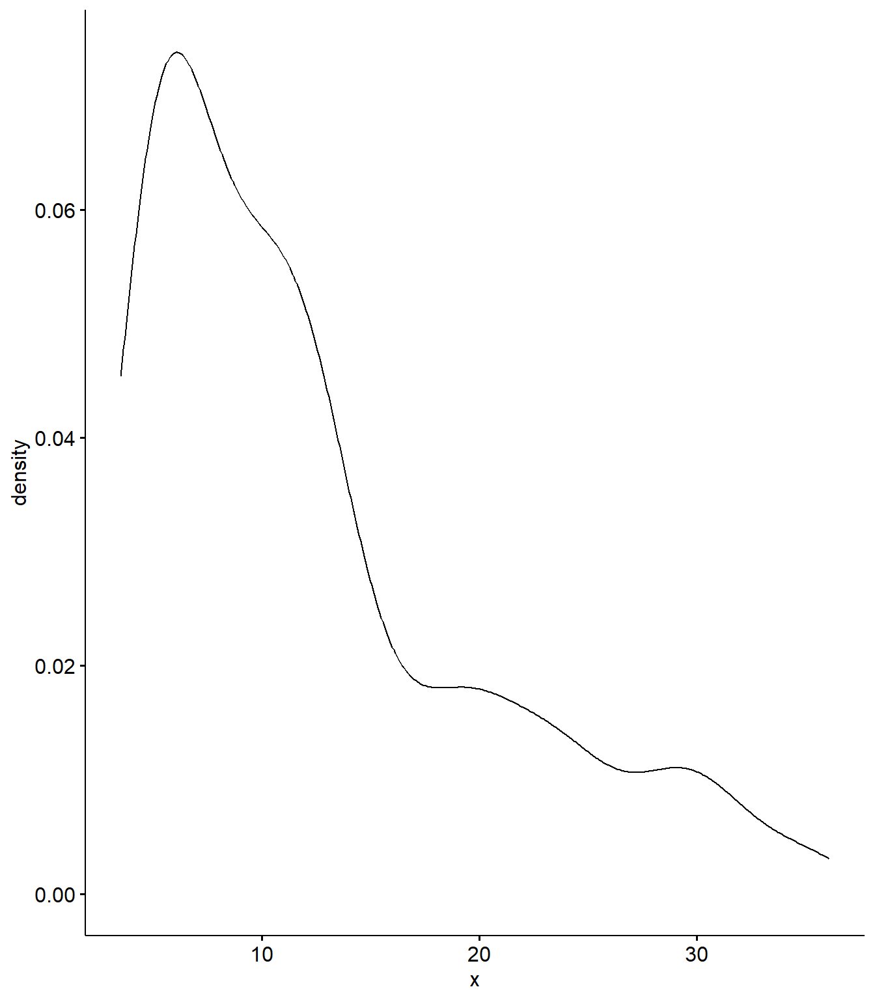
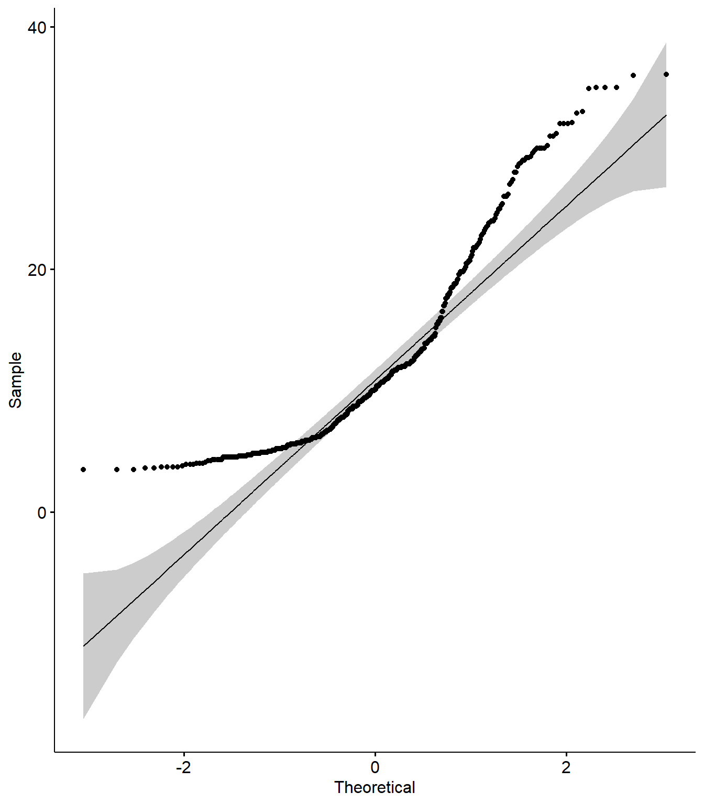
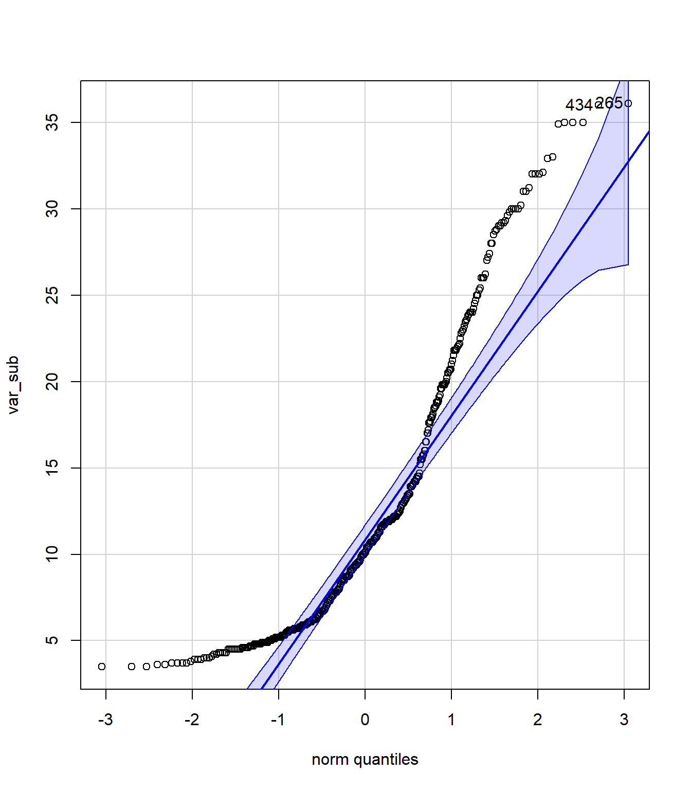
## [1] 265 4349.6.2 Testes de Shapiro-Wilk e Kolmogorov-Smirnov
shap <- shapiro.test(var_sub)
shap
p <- format(shap$p.value, scientific = FALSE)
p
ks.test(var_sub, "pnorm")## Warning in ks.test.default(var_sub, "pnorm"): não devem existir empates no
## teste de Kolmogorov-Smirnov de apenas uma amostra##
## Shapiro-Wilk normality test
##
## data: var_sub
## W = 0.86837, p-value < 2.2e-16
##
## [1] "0.00000000000000000107347"
##
## Asymptotic one-sample Kolmogorov-Smirnov test
##
## data: var_sub
## D = 0.99977, p-value < 2.2e-16
## alternative hypothesis: two-sided9.7 Testando diferenças entre médias
9.7.1 Testando homogeneidade de variâncias
# F-test
#var.test(CT_cm ~ sexo, data = univ) com erro
#Interpretação: Um valor de p maior que o nível de significância de 0.05 significa que, NÃO HÁ diferença significativa entre as duas variâncias.
# Levene
library(car)
#univ$sexo <- as.factor(univ$sexo) #evita o Warning de "group coerced to factor"
lev <- leveneTest(CT_cm ~ sexo, data = univ)## Warning in leveneTest.default(y = y, group = group, ...): group coerced to
## factor.lev
# Teste de Levene entre dois de tres grupos
machos_CT_cm <- na.omit(univ$CT_cm[univ$sexo == "MACHO"])
femeas_CT_cm <- na.omit(univ$CT_cm[univ$sexo == "FEMEA"])
imat_CT_cm <- na.omit(univ$CT_cm[univ$sexo == "imaturo"])
lev2 <- leveneTest(CT_cm ~ sexo, data = univ[univ$sexo %in% c("MACHO", "FEMEA"), ])## Warning in leveneTest.default(y = y, group = group, ...): group coerced to
## factor.lev2
#Interpretação: Um valor de p maior que o nível de significância de 0.05 significa que, a hipótese nula é mantida e NÃO HÁ diferença significativa entre as variâncias.
univ$sexo <- factor(univ$sexo, levels = c("MACHO", "FEMEA", "imaturo"))
boxplot(CT_cm ~ sexo, data = univ) 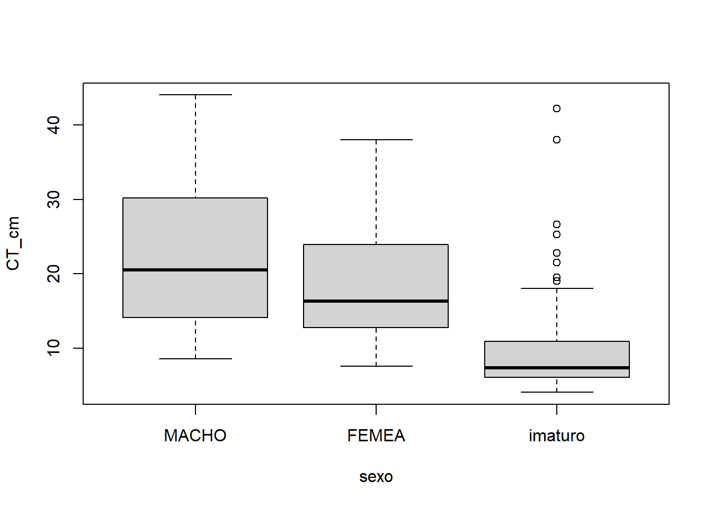
## Levene's Test for Homogeneity of Variance (center = median)
## Df F value Pr(>F)
## group 2 45.395 < 2.2e-16 ***
## 431
## ---
## Signif. codes: 0 '***' 0.001 '**' 0.01 '*' 0.05 '.' 0.1 ' ' 1
## Levene's Test for Homogeneity of Variance (center = median)
## Df F value Pr(>F)
## group 1 10.826 0.001173 **
## 211
## ---
## Signif. codes: 0 '***' 0.001 '**' 0.01 '*' 0.05 '.' 0.1 ' ' 19.7.2 Teste entre duas médias (t-Student)
t.test(machos_CT_cm, femeas_CT_cm,
alternative = c("two.sided", "less", "greater"),
mu = 0, paired = FALSE, var.equal = FALSE,
conf.level = 0.95)##
## Welch Two Sample t-test
##
## data: machos_CT_cm and femeas_CT_cm
## t = 3.4342, df = 210.89, p-value = 0.0007155
## alternative hypothesis: true difference in means is not equal to 0
## 95 percent confidence interval:
## 1.747453 6.456834
## sample estimates:
## mean of x mean of y
## 22.70984 18.607699.7.3 Teste entre três médias (ANOVA)
levels(univ$sexo)
univ$sexo <- ordered(univ$sexo,
levels = c("MACHO", "FEMEA", "imaturo"))
library(dplyr)
group_by(univ, sexo) %>%
summarise(
count = n(),
mean = mean(CP_cm, na.rm = TRUE),
sd = sd(CP_cm, na.rm = TRUE)
)
# Conjunto de gráficos
library("ggpubr")
ggboxplot(univ, x = "sexo", y = "CP_cm",
color = "sexo", palette = c("#00AFBB", "#E7B800", "#FC4E07"),
order = c("MACHO", "FEMEA", "imaturo"),
ylab = "CP_cm", xlab = "Sexo")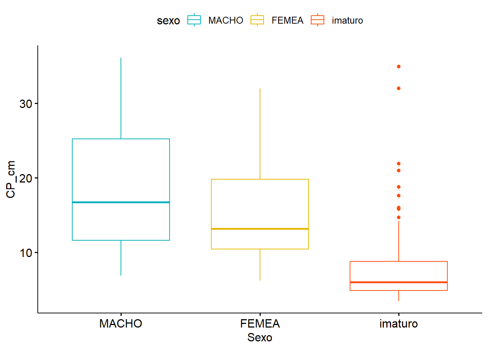
ggline(univ, x = "sexo", y = "CP_cm",
add = c("mean_se", "jitter"),
order = c("MACHO", "FEMEA", "imaturo"),
ylab = "Weight", xlab = "Treatment")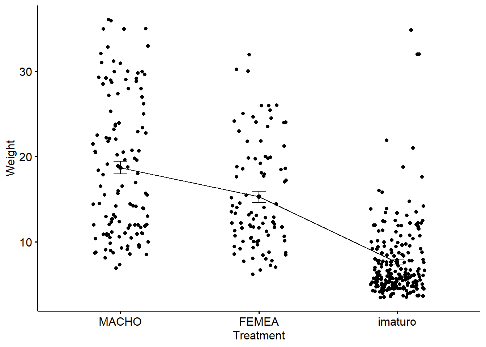
boxplot(CP_cm ~ sexo, data = univ,
xlab = "Sexo", ylab = "CP_cm",
frame = FALSE, col = c("#00AFBB", "#E7B800", "#FC4E07"))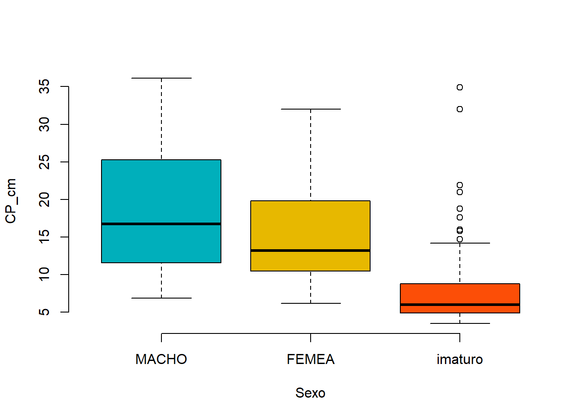
library(gplots)
plotmeans(CP_cm ~ sexo, data = univ, frame = FALSE,
xlab = "Sexo", ylab = "CP_cm",
main="Mean Plot with 95% CI")## Warning in plot.xy(xy.coords(x, y), type = type, ...): "frame" não é um
## parâmetro gráfico## Warning in axis(1, at = 1:length(means), labels = legends, ...): "frame" não é
## um parâmetro gráfico## Warning in plot.xy(xy.coords(x, y), type = type, ...): "frame" não é um
## parâmetro gráfico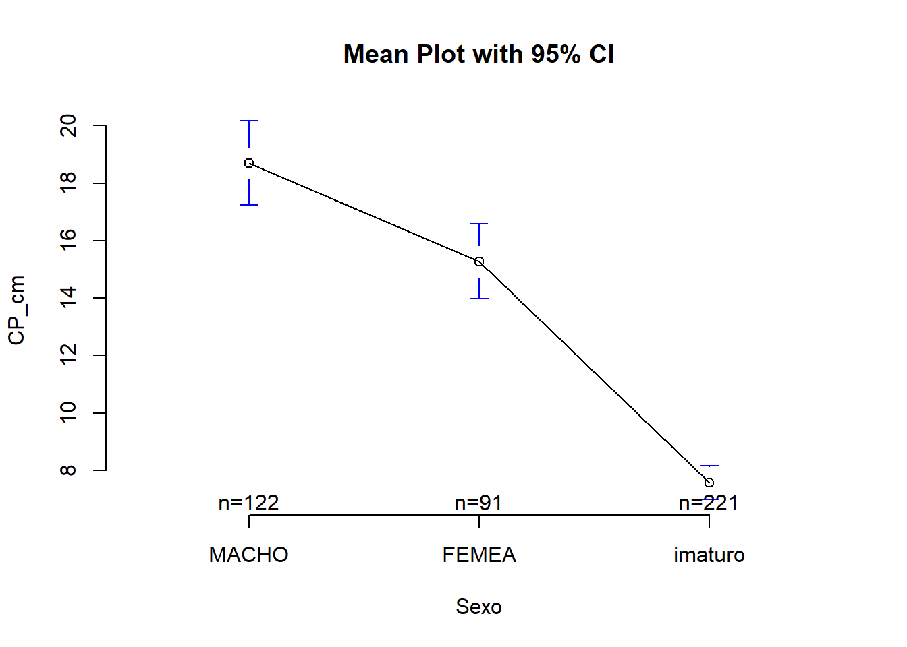
# ANOVA
anova <- aov(CP_cm ~ sexo, data = univ)
summary(anova)
#Interpretação: Um valor de p MENOR que o nível de significância de 0.05 significa que,
#EXISTE diferença significativa entre as três grupos de médias.
# Comparações multiplas
TukeyHSD(anova)
library(multcomp)
library(multcomp)
summary(glht(anova, linfct = mcp(sexo = "Tukey")))
# T-test entre pares
pairwise.t.test(univ$CP_cm, univ$sexo,
p.adjust.method = "BH")
# Pressupostos
## Homogeneidade de variâncias
plot(anova, 1) #valores numerados são outliers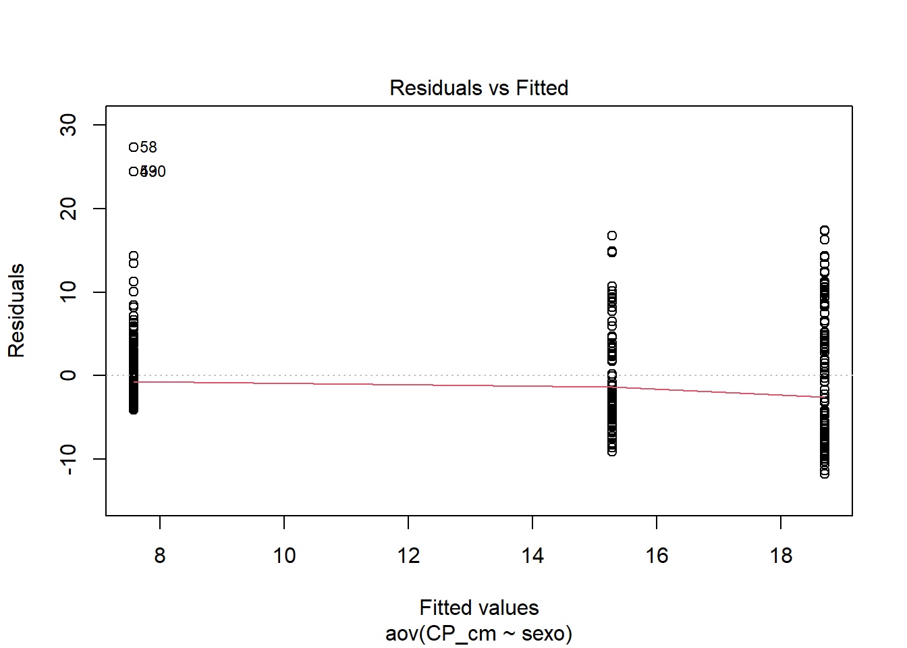
library(car)
leveneTest(CP_cm ~ sexo, data = univ)
# ANOVA sem o pressuposto de equalidade de variâncias
oneway.test(CP_cm ~ sexo, data = univ)
# Testes pareados sem o pressuposto de equalidade de variâncias
pairwise.t.test(univ$CP_cm, univ$sexo,
p.adjust.method = "BH", pool.sd = FALSE)
# Normalidade pelos resíduos (Q-Q plot)
plot(anova, 2)# Extraindo os resíduos e rodando o Shapiro-Wilk neles
anova_residuals <- residuals(object = anova)
shapiro.test(x = anova_residuals)
# ANOVA não-paramétrica (Kruskal-Wallis)
kruskal.test(CP_cm ~ sexo, data = univ)## [1] "MACHO" "FEMEA" "imaturo"
## # A tibble: 3 × 4
## sexo count mean sd
## <ord> <int> <dbl> <dbl>
## 1 MACHO 122 18.7 8.16
## 2 FEMEA 91 15.3 6.25
## 3 imaturo 221 7.57 4.44
## Df Sum Sq Mean Sq F value Pr(>F)
## sexo 2 10743 5371 145.5 <2e-16 ***
## Residuals 431 15911 37
## ---
## Signif. codes: 0 '***' 0.001 '**' 0.01 '*' 0.05 '.' 0.1 ' ' 1
## Tukey multiple comparisons of means
## 95% family-wise confidence level
##
## Fit: aov(formula = CP_cm ~ sexo, data = univ)
##
## $sexo
## diff lwr upr p adj
## FEMEA-MACHO -3.424716 -5.403982 -1.445451 0.0001655
## imaturo-MACHO -11.127884 -12.739590 -9.516177 0.0000000
## imaturo-FEMEA -7.703167 -9.482984 -5.923350 0.0000000
##
##
## Simultaneous Tests for General Linear Hypotheses
##
## Multiple Comparisons of Means: Tukey Contrasts
##
##
## Fit: aov(formula = CP_cm ~ sexo, data = univ)
##
## Linear Hypotheses:
## Estimate Std. Error t value Pr(>|t|)
## FEMEA - MACHO == 0 -3.4247 0.8416 -4.069 0.000161 ***
## imaturo - MACHO == 0 -11.1279 0.6853 -16.238 < 1e-04 ***
## imaturo - FEMEA == 0 -7.7032 0.7568 -10.179 < 1e-04 ***
## ---
## Signif. codes: 0 '***' 0.001 '**' 0.01 '*' 0.05 '.' 0.1 ' ' 1
## (Adjusted p values reported -- single-step method)
##
##
## Pairwise comparisons using t tests with pooled SD
##
## data: univ$CP_cm and univ$sexo
##
## MACHO FEMEA
## FEMEA 5.6e-05 -
## imaturo < 2e-16 < 2e-16
##
## P value adjustment method: BH
## Levene's Test for Homogeneity of Variance (center = median)
## Df F value Pr(>F)
## group 2 45.138 < 2.2e-16 ***
## 431
## ---
## Signif. codes: 0 '***' 0.001 '**' 0.01 '*' 0.05 '.' 0.1 ' ' 1
##
## One-way analysis of means (not assuming equal variances)
##
## data: CP_cm and sexo
## F = 134.26, num df = 2.00, denom df = 180.92, p-value < 2.2e-16
##
##
## Pairwise comparisons using t tests with non-pooled SD
##
## data: univ$CP_cm and univ$sexo
##
## MACHO FEMEA
## FEMEA 0.00063 -
## imaturo < 2e-16 < 2e-16
##
## P value adjustment method: BH
##
## Shapiro-Wilk normality test
##
## data: anova_residuals
## W = 0.93021, p-value = 2.35e-13
##
##
## Kruskal-Wallis rank sum test
##
## data: CP_cm by sexo
## Kruskal-Wallis chi-squared = 217.39, df = 2, p-value < 2.2e-169.7.4 Teste entre três médias e dois fatores (Two-Way ANOVA)
univ$sexo <- factor(univ$sexo,
labels = c("MACHO", "FEMEA", "imaturo"))
univ$periodo <- factor(univ$periodo,
labels = c("chuvoso", "seco"))
str(univ)
table(univ$sexo,univ$periodo)
library("ggpubr")
ggboxplot(univ, x = "sexo", y = "CP_cm", color = "periodo",
palette = c("#00AFBB", "#E7B800"))
ggline(univ, x = "sexo", y = "CP_cm", color = "periodo",
add = c("mean_se", "dotplot"),
palette = c("#00AFBB", "#E7B800"))## Bin width defaults to 1/30 of the range of the data. Pick better value with
## `binwidth`.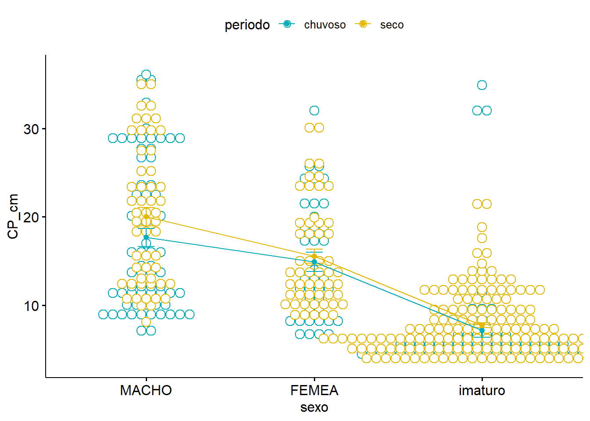
boxplot(CP_cm ~ periodo * sexo, data=univ, frame = FALSE,
col = c("#00AFBB", "#E7B800"), ylab="CP_cm")
# Gráfico das interações
interaction.plot(x.factor = univ$sexo, trace.factor = univ$periodo,
response = univ$CP_cm, fun = mean,
type = "b", legend = TRUE,
xlab = "Sexo", ylab="CP_cm",
pch=c(1,19), col = c("#00AFBB", "#E7B800"))
# ANOVA Two-way
anova2 <- aov(CP_cm ~ periodo + sexo, data = univ)
summary(anova2)
#The above-fitted model is not referred to as an additive model.
#It is presumptively assumed that the two-factor variables are unrelated.
#Replace the plus symbol (+) with an asterisk (*) if you think
#these two variables will interact to create a synergistic effect.
anova3 <- aov(CP_cm ~ periodo * sexo, data = univ)
summary(anova3)
require("dplyr")
group_by(univ, periodo, sexo) %>%
summarise(
count = n(),
mean = mean(CP_cm, na.rm = TRUE),
sd = sd(CP_cm, na.rm = TRUE)
)## `summarise()` has grouped output by 'periodo'. You can override using the
## `.groups` argument.# Comparações múltiplas pares: Tukey
TukeyHSD(anova3, which = "sexo")
# Comparações múltiplas pares
library(multcomp)
summary(glht(anova2, linfct = mcp(sexo = "Tukey")))
# T-test entre pares
pairwise.t.test(univ$CP_cm, univ$sexo,
p.adjust.method = "BH")
# Pressupostos
## Homogeneidade de variâncias
plot(anova3, 1)library(car)
leveneTest(CP_cm ~ periodo*sexo, data = univ)
# Normalidade pelos resíduos (Q-Q plot)
plot(anova3, 2)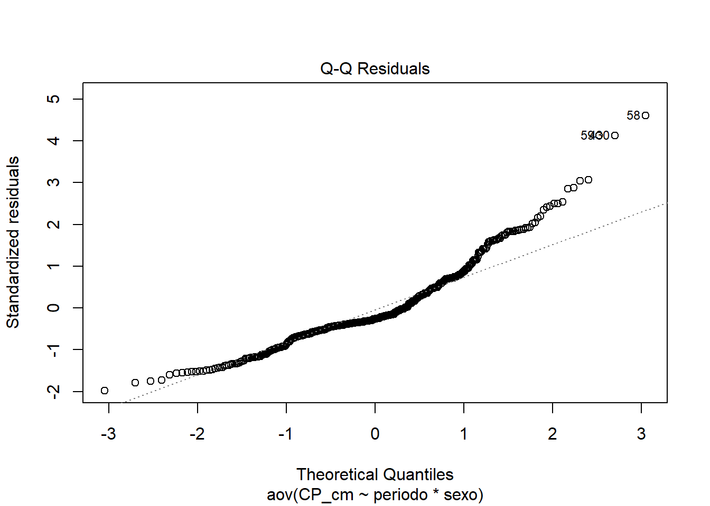
# Extraindo os resíduos e rodando o Shapiro-Wilk neles
anova3_residuals <- residuals(object = anova3)
shapiro.test(x = anova3_residuals )
# ANOVA para desenhos não balanceados
library(car)
nb_anova <- aov(CP_cm ~ periodo * sexo, data = univ)
Anova(nb_anova, type = "III")## 'data.frame': 434 obs. of 23 variables:
## $ n.=.434 : chr "TU001" "TU002" "TU003" "TU004" ...
## $ CT_cm : num 32.4 33.4 27.3 13.2 14.3 22.7 23.2 13.5 24.6 19.4 ...
## $ PT_g : num 468.8 520 301.5 28.2 38.9 ...
## $ CP_cm : num 27.2 28.8 23.8 11 11.9 20.5 19.2 11.5 20.5 16 ...
## $ Ctubo_cm: num 39.8 14.3 13 16.5 15.5 24.2 25 17.5 25.7 18.3 ...
## $ PC_g : num 458.9 507.4 283.4 27.7 37.7 ...
## $ %PT : num 2.11 2.42 6 1.77 3.08 ...
## $ Pest_g : num 3.9 5.9 15.5 0.3 0.8 9.9 6.8 4.1 2.5 0.7 ...
## $ Cest_cm : num 7.7 10 10.2 4.3 4.5 6.4 7.5 6.8 7.6 5.1 ...
## $ gr_est : chr "I" "I" "III" "I" ...
## $ ir_est : num 0.832 1.135 5.141 1.064 2.057 ...
## $ Pint_g : num 4.8 5.3 2.4 0.1 0.3 2.7 3.3 0.4 2 1.4 ...
## $ Cint_cm : num 38.3 13.3 12 16 15 23.7 24.5 17 25.3 17.7 ...
## $ gr_int : chr "II" "II" "II" "II" ...
## $ ir_int : num 1.024 1.019 0.796 0.355 0.771 ...
## $ Pgon_g : num 1.2 1.4 0.2 0.1 0.1 0.4 13.8 0.1 0.1 0.1 ...
## $ Cgon_cm : chr "7" "6.5" "7.7" "5" ...
## $ emg : chr "IMATURO" "MADURO" "EM MATURACAO" "IMATURO" ...
## $ ig : num 0.256 0.2692 0.0663 0.3546 0.2571 ...
## $ mes : chr "ago" "ago" "ago" "ago" ...
## $ periodo : Factor w/ 2 levels "chuvoso","seco": 1 1 1 1 1 1 1 1 1 1 ...
## $ estação : chr "inverno" "inverno" "inverno" "inverno" ...
## $ sexo : Ord.factor w/ 3 levels "MACHO"<"FEMEA"<..: 1 1 1 1 1 1 2 3 1 1 ...
##
## chuvoso seco
## MACHO 68 54
## FEMEA 38 53
## imaturo 60 161
## Df Sum Sq Mean Sq F value Pr(>F)
## periodo 1 231 231 6.29 0.0125 *
## sexo 2 10634 5317 144.80 <2e-16 ***
## Residuals 430 15789 37
## ---
## Signif. codes: 0 '***' 0.001 '**' 0.01 '*' 0.05 '.' 0.1 ' ' 1
## Df Sum Sq Mean Sq F value Pr(>F)
## periodo 1 231 231 6.287 0.0125 *
## sexo 2 10634 5317 144.714 <2e-16 ***
## periodo:sexo 2 64 32 0.874 0.4180
## Residuals 428 15725 37
## ---
## Signif. codes: 0 '***' 0.001 '**' 0.01 '*' 0.05 '.' 0.1 ' ' 1
## # A tibble: 6 × 5
## # Groups: periodo [2]
## periodo sexo count mean sd
## <fct> <ord> <int> <dbl> <dbl>
## 1 chuvoso MACHO 68 17.7 8.41
## 2 chuvoso FEMEA 38 14.9 6.78
## 3 chuvoso imaturo 60 7.18 6.25
## 4 seco MACHO 54 20.0 7.70
## 5 seco FEMEA 53 15.5 5.90
## 6 seco imaturo 161 7.72 3.56
## Tukey multiple comparisons of means
## 95% family-wise confidence level
##
## Fit: aov(formula = CP_cm ~ periodo * sexo, data = univ)
##
## $sexo
## diff lwr upr p adj
## FEMEA-MACHO -3.214875 -5.189460 -1.240291 0.0004334
## imaturo-MACHO -10.698753 -12.306648 -9.090859 0.0000000
## imaturo-FEMEA -7.483878 -9.259486 -5.708270 0.0000000
##
##
## Simultaneous Tests for General Linear Hypotheses
##
## Multiple Comparisons of Means: Tukey Contrasts
##
##
## Fit: aov(formula = CP_cm ~ periodo + sexo, data = univ)
##
## Linear Hypotheses:
## Estimate Std. Error t value Pr(>|t|)
## FEMEA - MACHO == 0 -3.5823 0.8438 -4.246 7.4e-05 ***
## imaturo - MACHO == 0 -11.4502 0.7060 -16.219 < 1e-05 ***
## imaturo - FEMEA == 0 -7.8679 0.7601 -10.351 < 1e-05 ***
## ---
## Signif. codes: 0 '***' 0.001 '**' 0.01 '*' 0.05 '.' 0.1 ' ' 1
## (Adjusted p values reported -- single-step method)
##
##
## Pairwise comparisons using t tests with pooled SD
##
## data: univ$CP_cm and univ$sexo
##
## MACHO FEMEA
## FEMEA 5.6e-05 -
## imaturo < 2e-16 < 2e-16
##
## P value adjustment method: BH
## Levene's Test for Homogeneity of Variance (center = median)
## Df F value Pr(>F)
## group 5 16.044 1.67e-14 ***
## 428
## ---
## Signif. codes: 0 '***' 0.001 '**' 0.01 '*' 0.05 '.' 0.1 ' ' 1
##
## Shapiro-Wilk normality test
##
## data: anova3_residuals
## W = 0.92359, p-value = 4.653e-14
##
## Anova Table (Type III tests)
##
## Response: CP_cm
## Sum Sq Df F value Pr(>F)
## (Intercept) 27390.0 1 745.5129 <2e-16 ***
## periodo 122.3 1 3.3281 0.0688 .
## sexo 3641.5 2 49.5584 <2e-16 ***
## periodo:sexo 64.2 2 0.8741 0.4180
## Residuals 15724.6 428
## ---
## Signif. codes: 0 '***' 0.001 '**' 0.01 '*' 0.05 '.' 0.1 ' ' 19.8 Correlação e regressão simples
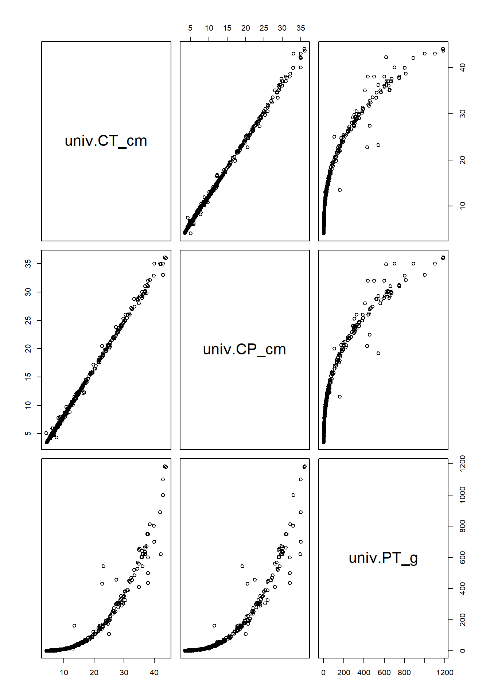
cor(df,method="pearson")
cor(df[,1:3], method="spearman")
cor.test(univ$CT_cm, univ$CP_cm, method="pearson")
cor.test(univ$CT_cm, univ$CP_cm, method="spearman")## Warning in cor.test.default(univ$CT_cm, univ$CP_cm, method = "spearman"):
## Impossível calcular o valor exato de p com empates

## Coefficient covariances computed by hccm()## univ.CT_cm univ.CP_cm univ.PT_g
## univ.CT_cm 1.0000000 0.9990120 0.9057485
## univ.CP_cm 0.9990120 1.0000000 0.9039503
## univ.PT_g 0.9057485 0.9039503 1.0000000
## univ.CT_cm univ.CP_cm univ.PT_g
## univ.CT_cm 1.0000000 0.9976789 0.9924823
## univ.CP_cm 0.9976789 1.0000000 0.9934510
## univ.PT_g 0.9924823 0.9934510 1.0000000
##
## Pearson's product-moment correlation
##
## data: univ$CT_cm and univ$CP_cm
## t = 467.22, df = 432, p-value < 2.2e-16
## alternative hypothesis: true correlation is not equal to 0
## 95 percent confidence interval:
## 0.9988068 0.9991819
## sample estimates:
## cor
## 0.999012
##
##
## Spearman's rank correlation rho
##
## data: univ$CT_cm and univ$CP_cm
## S = 31624, p-value < 2.2e-16
## alternative hypothesis: true rho is not equal to 0
## sample estimates:
## rho
## 0.9976789
##
##
## Call:
## lm(formula = univ$CT_cm ~ univ$CP_cm, data = univ)
##
## Residuals:
## Min 1Q Median 3Q Max
## -2.3777 -0.1281 -0.0147 0.1260 3.0354
##
## Coefficients:
## Estimate Std. Error t value Pr(>|t|)
## (Intercept) 0.147883 0.037700 3.923 0.000102 ***
## univ$CP_cm 1.206566 0.002582 467.221 < 2e-16 ***
## ---
## Signif. codes: 0 '***' 0.001 '**' 0.01 '*' 0.05 '.' 0.1 ' ' 1
##
## Residual standard error: 0.4216 on 432 degrees of freedom
## Multiple R-squared: 0.998, Adjusted R-squared: 0.998
## F-statistic: 2.183e+05 on 1 and 432 DF, p-value: < 2.2e-16
##
## Analysis of Variance Table
##
## Response: univ$CT_cm
## Df Sum Sq Mean Sq F value Pr(>F)
## univ$CP_cm 1 38802 38802 218295 < 2.2e-16 ***
## Residuals 432 77 0
## ---
## Signif. codes: 0 '***' 0.001 '**' 0.01 '*' 0.05 '.' 0.1 ' ' 1
## Anova Table (Type II tests)
##
## Response: univ$CT_cm
## Sum Sq Df F value Pr(>F)
## univ$CP_cm 38802 1 218295 < 2.2e-16 ***
## Residuals 77 432
## ---
## Signif. codes: 0 '***' 0.001 '**' 0.01 '*' 0.05 '.' 0.1 ' ' 1
## Analysis of Deviance Table (Type II tests)
##
## Response: univ$CT_cm
## Df F Pr(>F)
## univ$CP_cm 1 75315 < 2.2e-16 ***
## Residuals 432
## ---
## Signif. codes: 0 '***' 0.001 '**' 0.01 '*' 0.05 '.' 0.1 ' ' 1